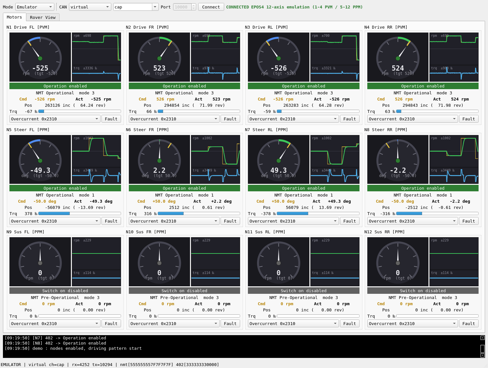
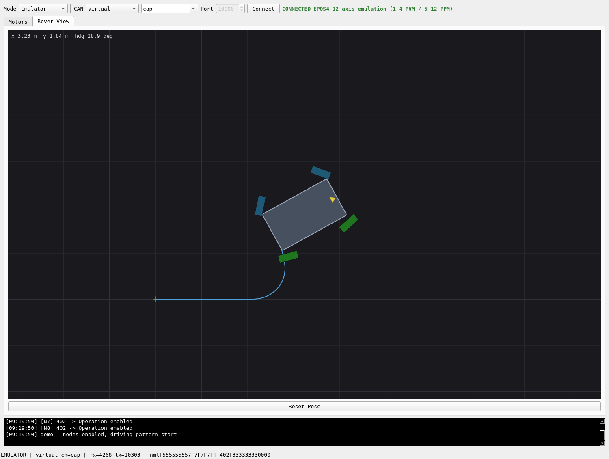

현대자동차 L-Project — 달 탐사 로버 12축 HILS 시스템¶
진행중 · Hyundai Motor L-Project — Lunar Rover 12-Axis HILS Platform
프로젝트 한눈에 보기
현대자동차 L-Project팀 과제로 개발 중인 달 탐사 로버 구동계 HILS(Hardware-In-the-Loop Simulation) 시스템입니다. 4륜 독립조향(4WS) + 액티브 서스펜션의 12축 로버를 Navigation(NVIDIA Jetson) — HILS 보드(STM32H7, micro-ROS) — 시뮬레이션 PC(Isaac Sim)의 3계층 폐루프로 검증합니다.
실물 모터드라이버(maxon EPOS4 ×12) 없이도 CANopen 마스터 소프트웨어를 개발·검증할 수 있도록 드라이버 에뮬레이터를 자체 개발했으며, EPOS4 펌웨어 사양서 기준의 프로토콜 동작을 12축 자동 시험으로 확인합니다. 실물 드라이버의 전기적 특성·응답 타이밍 검증은 이 시험 범위에 포함되지 않습니다.
핵심 설계 원칙 — HILS 보드가 항상 루프 안에 있다. 실 구동/시뮬레이션 어느 모드든 Navigation의 명령은 보드의 Drive Interface 추상 계층을 거치므로, 제어 주기·안전 로직·인터페이스를 두 모드에서 동일하게 검증할 수 있도록 설계했습니다. 3머신 통합 검증은 A6 시험으로 남아 있습니다.
목표 시스템 구성 — 3계층 XRCE-DDS 아키텍처¶
flowchart TB
subgraph J["Navigation — NVIDIA Jetson (ROS2 Humble)"]
NAV[Nav2 / Isaac ROS] -- /cmd_vel --> RC[rover_control<br/>4WS 기구학 · 명령 중재]
JOY[조이스틱<br/>rover_teleop] -- "/cmd_vel_joy (우선)" --> RC
RC -- "/rover/axes_cmd [12]" --> AG[micro_ros_agent]
RS[rover_state<br/>오도메트리] -- /odom + TF --> NAV
HM[health_monitor<br/>/diagnostics]
end
subgraph B["HILS 보드 — STM32H7 (FreeRTOS + micro-ROS)"]
MCU[rover_mcu] --- DIF{{Drive Interface}}
DIF -- real --> EPOS[CANopen 마스터<br/>EPOS4 ×12]
DIF -- sim --> DSIM[DDS 백엔드]
end
subgraph S["시뮬레이션 PC"]
SIM[Isaac Sim<br/>VIPER 로버 플랜트]
EMU[EPOS4 에뮬레이터<br/>12노드 GUI]
end
AG === MCU
DSIM -.-> SIM
SIM -.-> DSIMrover_control, rover_state, 보드의 Drive Interface와 drv_sim 경로는 구현되어 있습니다.
위 그림 전체를 Jetson·시뮬레이션 PC·보드로 연결하는 A6 시험과 실물 EPOS4 경로는 아직
완료되지 않았습니다.
- 통신: Ethernet Hub 단일망(UDP) — MCU는 XRCE-DDS(W5300 커스텀 UDP 전송), Linux 간은 Fast DDS(도메인 통일)
- 12축 계약(v3): 구동 4축(속도, PVM) + 조향 4축(±90°, PPM) + 서스펜션 4축(±30°, PPM)
- 4WS 기구학: 스워브 정/역기구학(강체 최소자승) — 제자리 회전·crab 주행 지원
- 주행 입력: 자율(Nav2)과 수동(조이스틱) 이중 경로 — 수동이 자율을 선점
- 안전:
rover_control·보드 drive 계층 워치독 + 노드 헬스 모니터링. EPOS4 RPDO 타임아웃과 STO는 N5 실기 과제
ROS2 노드·토픽 그래프¶
위 그림이 어느 기계에서 무엇이 도는가를 보여준다면, 아래는 기계 경계를 지우고 노드와 토픽의 연결만 남긴 그래프입니다. 실선이 실 구동(real), 점선이 시뮬레이션(sim) 경로입니다.
flowchart TB
NAV(["Nav2 / Isaac ROS"])
JOYD(["joy_node"])
TELE["rover_teleop"]
RC["rover_control"]
RS["rover_state"]
HM["health_monitor"]
MCU["rover_mcu<br/>HILS 보드"]
PLANT(["sim_plant / Isaac Sim"])
EPOS(["EPOS4 ×12 · CAN"])
JOYD -- "/joy" --> TELE
TELE -- "/cmd_vel_joy" --> RC
NAV -- "/cmd_vel" --> RC
TELE -- "/rover/suspension_cmd" --> RC
RC -- "/rover/axes_cmd [12]" --> MCU
MCU -- "CANopen RPDO" --> EPOS
EPOS -- "TPDO" --> MCU
MCU -. "/sim/axes_cmd [12]" .-> PLANT
PLANT -. "/sim/joint_states" .-> MCU
MCU -- "/rover/joint_states" --> RS
RS -- "/odom + TF" --> NAV
MCU -- "/rover/status" --> HM
RC -. 감시 .-> HM
RS -. 감시 .-> HM모드 전환 지점은 HILS 보드 안입니다 — Jetson 쪽 노드는 실 구동인지 시뮬레이션인지
구분하지 않고 같은 /rover/* 인터페이스만 봅니다. health_monitor는 구독만 하며 제어에
개입하지 않습니다. 지그 경로(hils_bridge → /hils/*)는 구동계와 독립이라 위 그래프에는
포함하지 않았습니다.
발행·구독 전체 매트릭스는 저장소 아키텍처 문서(AD-002 3a절)에 있습니다.
미들웨어 선택 — 왜 MCU는 XRCE-DDS인가¶
MCU에서 완전 DDS(RTPS)를 직접 구동하는 방안(Cyclone DDS의 FreeRTOS 포트, embeddedRTPS)을 검토한 뒤 기각하고, XRCE-DDS + 에이전트 구조를 확정했습니다. 판단 근거는 세 가지입니다.
| 관점 | 검토 결과 |
|---|---|
| 인터페이스 | 보드는 성능을 위해 W5300(하드웨어 TCP/IP 오프로드)을 쓰는데, DDS 스택이 요구하는 것은 BSD 소켓 시맨틱입니다. 두 요구는 한 칩에서 양립하지 않습니다 — 멀티캐스트 조인이 그룹당 하드웨어 소켓 하나를 소모하고(8개 중 4개 이미 사용), iovec sendmsg·select() 웨이트셋·getifaddrs가 없습니다. lwIP로 내려가면 시맨틱은 얻지만 오프로드가 사라져 W5300 채택 근거가 소멸합니다. |
| 자원 | micro-ROS 클라이언트 + rclc + FreeRTOS 전체가 78 KB(381 → 459 KB)인 반면, 디스커버리·QoS 매칭·히스토리 캐시를 갖춘 완전 RTPS 스택은 규모가 자릿수 단위로 다르고 공식 MCU 풋프린트가 공개되어 있지 않습니다. 현재 잔여 433 KB, RAM 77.7% 사용 중입니다. |
| 성능 | 실제 부하는 12축 명령·피드백을 50 Hz로 주고받는 수십 KB/s 수준이라 링크가 병목이 아닙니다. 오히려 RTPS의 주기적 디스커버리(SPDP/SEDP)와 QoS 매칭이 MCU와 링크 부하를 늘려, W5300을 채택한 목적과 상충합니다. |
이 결정은 선택지를 닫지 않습니다. RMW 경계는 micro-ROS 에이전트이므로, Nav2 통합 과정에서 CycloneDDS가 필요해지면 에이전트와 Linux 노드의 RMW만 교체하면 됩니다. 보드 펌웨어는 그대로입니다.
상세 근거와 재검토 조건은 아키텍처 문서(AD-002 5.2a절)에 결정 기록으로 남겨 두었습니다.
수동 주행 — 조이스틱 텔레옵과 명령 중재¶
자율 주행(Nav2)과 별개로 조이스틱 수동 주행을 지원합니다. 4WS 로버라 스워브 관례를 따라 왼쪽 스틱은 병진(전후 + 게걸음), 오른쪽 스틱은 제자리 회전에 대응하고, 버튼으로 서스펜션 자세 프리셋(level/lift/drop)을 함께 조작합니다.
게걸음(crab) 주행 — 네 바퀴가 모두 같은 방향으로 90° 조향해 차체 방향을 유지한 채 옆으로 이동하는 기동입니다. 4WS 로버만 할 수 있고 비홀로노믹 자율 주행 스택은 명령하지 않으므로, 사실상 수동 주행에서만 쓰이는 능력입니다.
| 항목 | 설계 |
|---|---|
| 명령 중재 | 별도 mux 노드 없이 rover_control 한 곳에서 처리 — 기구학 소유자가 명령 입구도 소유합니다. 조이스틱 명령이 1초 내에 들어오면 자율 주행 명령을 버립니다. |
| 데드맨 | 지정 버튼을 누르고 있는 동안에만 주행 명령이 나갑니다. 손을 떼면 즉시 0을 발행합니다. |
| 복귀 정책 | 데드맨을 떼도 우선권은 유지해 정지 상태를 지키고, 자율 주행 복귀는 별도 release 버튼으로 명시 반납할 때만 일어납니다 — 장애물을 피하려 조종간을 잡았다가 손을 뗀 순간 자율 주행이 다시 모는 상황을 막기 위한 설계입니다. |
| 두절 대응 | 조이스틱·노드가 죽으면 명령 발행이 끊기고, 구동축 정지는 기존 워치독(0.5초)이 담당합니다. |
검증은 합성 조이스틱 입력으로 자동화되어 있어 실물 패드 없이도 회귀 확인이 가능합니다
(tools/test_teleop.py — 5항목 전부 통과).
저장소 구성¶
개발 자산은 ROS2·도구·문서 저장소와 펌웨어 저장소 두 개로 분리해 형상 관리합니다. 두 저장소 모두 PRIVATE(승인제) — 소유자가 초대·승인한 콜라보레이터만 접근합니다.
| 저장소 | 내용 | 규모 |
|---|---|---|
parclab-hsu/l-project-hils-ros2 |
ROS2 패키지, EPOS4 에뮬레이터, Isaac/Nav2 설정, 배포 도구, 문서 14종 | 추적 파일 76개 · 커밋 58 (2026-08 기준) |
parclab-hsu/l-project-hils |
STM32 펌웨어 3종(로버 제어·캘리브레이션 지그·부트로더), PC 도구(GUI/로더) | 추적 파일 3,887개 (STM32Cube HAL 포함, 2026-08 기준) |
ROS2 · 도구 저장소 (l-project-hils-ros2)¶
l-project-hils-ros2/
├── hils_rover_control/ # ROS2 패키지 — 구동 제어·상태·진단
│ ├── hils_rover_control/
│ │ ├── axes.py # 12축 계약 단일 정의 (USD 조인트명·제원)
│ │ ├── kinematics.py # 4WS 스워브 정/역기구학 (강체 최소자승)
│ │ ├── rover_control_node.py# Twist → 12축 명령 + 워치독
│ │ ├── rover_state_node.py # JointState(12) → /odom + TF
│ │ ├── health_monitor_node.py# 토픽·노드·축 상태 → /diagnostics
│ │ ├── rover_teleop_node.py # 조이스틱 → /cmd_vel_joy (crab·서스 프리셋)
│ │ ├── epos_master.py # EPOS4 CANopen 마스터 (벤치용)
│ │ └── can_protocol.py # CANopen 프레임 헬퍼 (순수 함수)
│ ├── config/ # rover_params.yaml, nav2/nav2_params.yaml
│ └── launch/ # rover_control.launch.py, nav2_hils.launch.py
├── hils_bridge/ # ROS2 패키지 — 캘리브레이션 지그 UDP 브리지
├── tools/
│ ├── epos_rover_emulator/ # EPOS4 12노드 에뮬레이터 GUI (PySide6)
│ │ ├── lib/epos_node.py # CiA 301/402 노드 모델 (PVM·PPM·EMCY)
│ │ ├── lib/emu_core.py # 버스·12노드 관리, 4WS 자세 적분
│ │ ├── ui/ui_main.py # 12축 게이지·트렌드·로버 탑뷰
│ │ └── test_*.py # 자체 시험 / SIL / 12축 프로토콜 시험
│ ├── epos_bench.py # 실기 벤치 CLI (PVM 구동축)
│ ├── suspension_cmd.py # 서스펜션 자세 프리셋 CLI (OP-001)
│ ├── test_teleop.py # 조이스틱 텔레옵 자동 시험 (합성 /joy)
│ ├── sim_plant.py # 시뮬레이터 대역 플랜트 (1차 지연, 50 Hz)
│ ├── isaac/ # Isaac Sim 브리지 어댑터
│ ├── jetson/ · simpc/ # 배포 스크립트 + systemd 유닛
│ └── systemd/ # vcan0 가상 CAN 영구화
├── config/dds/ # Fast DDS/CycloneDDS 프로파일, 도메인 설정
└── docs/ # 문서 14종 (아래 표)
펌웨어 저장소 (l-project-hils)¶
firmware/
├── hils-rover-fw/ # 로버 제어 펌웨어 (STM32H723, FreeRTOS)
│ └── src/ap/modules/
│ ├── drive/
│ │ ├── drive.c/.h # Drive Interface 추상 계층 + 12축 계약·제원 단일 정의
│ │ ├── drv_epos.c # 백엔드 ① CANopen → EPOS4 ×12
│ │ └── drv_sim.c # 백엔드 ② DDS → 시뮬레이션 PC
│ ├── epos/epos.cpp/.h # CANopen 마스터 (12노드 PVM/PPM 혼합, PDO 재매핑)
│ └── micro_ros/
│ ├── rover_mcu.c # micro-ROS 노드 (/rover/* 토픽)
│ ├── uros_transport.c # W5300 UDP 커스텀 XRCE 전송
│ └── microros_support.c
├── hils-fw/ · hils-boot/ # 캘리브레이션 지그 펌웨어 · 부트로더
└── stm32cube/ # STM32H7 HAL (벤더 SDK)
software/
├── hils-gui/ # 지그 운용 GUI (PySide6)
└── hils-loader/ # 펌웨어 다운로더 (UDP/USB CDC)
개발 이력 — 주요 마일스톤¶
| 단계 | 내용 | 대표 커밋 |
|---|---|---|
| P2 | ROS2 구동 구조 설계 (제어·상태 노드, 기구학) | 811aa0c |
| P4·P5 | EPOS4 프로토콜 3중 구현(ROS2·펌웨어·에뮬레이터) + SIL 검증 | e989183 |
| P7 | 에뮬레이터 GUI 게이지·모니터 모드·트렌드 그래프 | f833878 · 0ad2519 |
| A1~A4 | FreeRTOS+micro-ROS 골격 → W5300 UDP 전송 → Drive Interface 추상화 → drv_sim 백엔드 (펌웨어) | d013e3d · 7730dec · 4e5394f · 8ccaf54 |
| A5 | Jetson 노드 개편 (/rover/* 계약, rover_state 신설) |
1689cb3 |
| v3 | 12축 전면 개정 (4WS + 액티브 서스펜션, 전 계층 동시 개정) | 9c765c7 |
| B1·B2 | 에뮬레이터 12노드·PPM 지원, 시험 절차서 12축 개정 | dd293d2 · 8a37c90 |
| QA | 전체 정합성 검토 → 흐름 검증 → 검토 보고서(RR-001) | 43d65f0 · 2c2f76d · 421f240 |
| — | 노드 헬스 모니터링, 서스펜션 정책(OP-001), 벤치 에뮬레이터 프로토콜 시험 | 45b219f · d756c3e · 7c08ce4 |
개발 규칙 — 기능 단위 커밋(영문 요약 + 상세 불릿), main 단일 브랜치,
build/·archive/ 등 산출물 제외, 문서와 코드를 같은 커밋에서 함께 갱신.
문서 체계¶
요구사항부터 운용 정책까지 문서 번호 체계로 관리하며, 코드 변경 시 관련 문서를 함께 개정합니다.
| 구분 | 문서 | 내용 |
|---|---|---|
| 요구사항 | SRS-001 | 소프트웨어 요구사항 명세서 (IEEE 830 준용) |
| 계획 | SDP-001 | 소프트웨어 개발 계획서 |
| 설계 | AD-002 | 시스템 아키텍처 v2 — XRCE-DDS 3계층, Drive Interface, 헬스 모니터링 |
| 분석 | AN-001 | VIPER v4 USD 자산 분석 (제원 실측·조인트 계약) |
| 시험 | TP-001 / TP-002 | EPOS4 벤치 시험 절차 / 3머신 통합 시험 절차 |
| 배포 | DP-001 / DP-002 | Jetson 배포 절차 / 시뮬레이션 PC 배포 절차 |
| 연동 | IG-001 / IG-002 / IG-003 | Isaac Sim / Nav2 / NVIDIA Isaac ROS Navigation |
| 검토 | RR-001 | 검토 보고서 — 결함 11건 목록·수정·검증 및 재발 방지 |
| 운용 | OP-001 | 서스펜션 제어 정책 (운영자 프리셋·안전 규칙) |
| 공유 | SG-001 | 협력팀 대상 자료 공유 안내 — 문서 지도·재현 절차·검증 범위 |
EPOS4 드라이버 에뮬레이터 — 소프트웨어 프로토콜 시험 환경¶
maxon EPOS4 Compact 50/8의 CANopen 프로토콜(NMT/SDO/PDO/CiA402 상태머신/PVM/PPM/EMCY)을 12노드 전부 에뮬레이션하는 PySide6 GUI입니다. 현재 자동 시험은 저장소의 PC 벤치 마스터와 에뮬레이터 사이의 프로토콜 일관성을 확인합니다. STM32 펌웨어와 에뮬레이터의 보드 포함 N2 시험, 실제 EPOS4 호환성 시험은 아직 완료되지 않았습니다.


대체 범위와 한계 — 12축 전체 자동 시험은 저장소 내 벤치 마스터와 에뮬레이터 사이의 프레임·상태머신·명령/피드백 동작을 확인합니다. 이는 EPOS4 사양서 기반의 소프트웨어 일관성 시험이며 실물 호환성 확정 시험은 아닙니다. 실제 모터 전류/토크 물리, 드라이버 튜닝, STO 하드웨어, 실시간 타이밍은 에뮬레이터로 확인할 수 없으므로 위험 등록부에 명시하고, 실물 도입 시 원 벤치 절차(TP-001)를 재수행하도록 계획했습니다.
검증 현황¶
아래 결과는 저장소에 기록된 2026-08-04 기준 시험 실적입니다. 소프트웨어 시험 결과와 실기 검증 상태를 구분해 표시합니다.
| 시험 | 결과 |
|---|---|
| 에뮬레이터 프로토콜 자체 시험 (SDO/PDO/402/PPM/EMCY) | 20 PASS / 0 FAIL |
| 12축 전체 프로토콜 시험 (벤치 마스터 ↔ 에뮬레이터) | 11 PASS / 0 FAIL — 에뮬레이터 기준 속도 1% 이내, 위치 ±1 count |
| SIL — PC 벤치 EposMaster ↔ 에뮬레이터 | ALL PASS (4구동 벤치 + PPM 조향 수렴) |
| ROS2 12축 폐루프 (cmd_vel → 4WS → 플랜트 → /odom) | 명령 복원 오차 < 0.1% |
| 노드 헬스 모니터링 | 컴포넌트 강제 종료 시 3 s 내 원인 지목(ERROR) |
| 조이스틱 수동 주행 (합성 입력) | 5 PASS / 0 FAIL — 자율 주행 선점, 게걸음 시 네 축 조향 90.0°, 데드맨 해제 시 정지 유지, 반납 후 자율 복귀 |
| 3머신 통합 시험 사전 리허설 (보드 대역) | 15 PASS / 0 FAIL — 토픽 주기·형식, 4WS 전달과 /odom 복원, 두절 시 구동축만 정지·폴트 진단. 보드 자리는 Linux 대역 노드이며 펌웨어·통신은 범위 밖 |
| Nav2 자율 주행 스모크 (무맵 1단계) | 10 PASS / 0 FAIL — 목표 (3.0, 1.0)에 오차 0.12 m 수렴·SUCCEEDED, 12축 경로 동작 |
통합 회귀 시험 (run_all_tests.sh) |
위 시험 6종 일괄 통과 (약 90초) — 인터프리터 자동 선택·잔존 노드 정리 포함 |
| 펌웨어 (FreeRTOS + micro-ROS + 12축 CANopen 마스터) | 2026-08-03 Arm GNU 13.3.Rel1 빌드 통과 — FLASH 461,460 B / 894 KB; 실기 HILS 검증은 A6 대기 |
| 3머신 A6 · 실물 EPOS4 · STO | 미실시 — 실물 드라이버 미구매, 전기·타이밍·안전 기능 검증 범위 밖 |
기술 스택¶
ROS2 Humble · micro-ROS (XRCE-DDS) · STM32H7 / FreeRTOS · CANopen (CiA 301/402) ·
Isaac Sim · Python / PySide6 · 4WS Kinematics · Jetson Orin · Fast DDS · Nav2 · Joy Teleop
프로젝트 목록으로 :octicons-file-document-16: SRS 전문 :octicons-file-document-16: SDP 전문